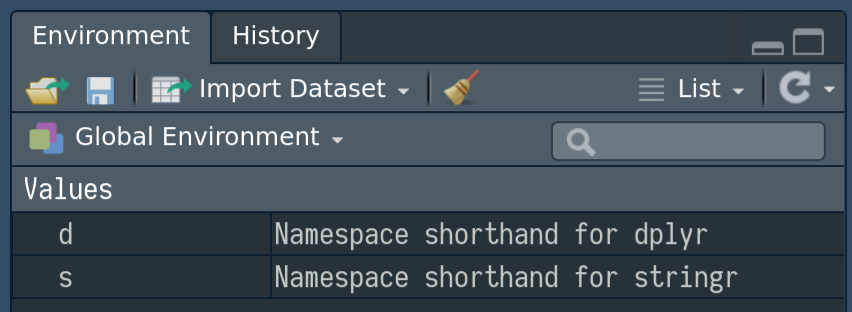

vignettes/namespace-shorthands.Rmd
namespace-shorthands.RmdThis package helps mimic the idiomatic python importing of packages such as
In order to mimic this as closely as possible, the function importAs takes a package name and a (short?) name for that and creates a linkage
library(importAs)
#>
#> Attaching package: 'importAs'
#> The following object is masked from 'package:base':
#>
#> ::
importAs(dplyr, d)
#> Namespace 'dplyr' can be referenced as 'd'
d
#> Namespace 'dplyr' can be referenced as 'd'
#> [1] "dplyr"or
importAs("dplyr", "d")
#> Namespace 'dplyr' can be referenced as 'd'
d
#> Namespace 'dplyr' can be referenced as 'd'
#> [1] "dplyr"This is merely a convenience, however. In reality a variable d is created with the value "dplyr" (and a class so we can dispatch on it). We could also do this manually for another package, creating a simple character object
The importAs function is merely a signal to a reader that this magic is going to be performed. The class means it is clearer that the shorthand is being used.
A custom description is provided within the RStudio Environment pane which identifies each shorthand and the namespace to which it refers.

As a further convenience, this can be specified using an infix operator (h/t @sa-lee)
dplyr %importAs% d
#> Namespace 'dplyr' can be referenced as 'd'
d
#> Namespace 'dplyr' can be referenced as 'd'
#> [1] "dplyr"At this point nothing magical has happened. The magic comes from overwriting the :: operator. To – at least, my – surprise, :: can happily take a character argument for the left-hand side, so
## equivalent to "dplyr"::filter
base::`::`("dplyr", filter)
#> function (.data, ...)
#> {
#> UseMethod("filter")
#> }
#> <environment: namespace:dplyr>works. The magic part is rewriting this function to look deeper if provided with a symbol which already resolves to a character string representing an installed package. The result is that we can shorthand the namespace referencing
d::filter(mtcars, cyl == 4, am == 1)
#> mpg cyl disp hp drat wt qsec vs am gear carb
#> 1 22.8 4 108.0 93 3.85 2.320 18.61 1 1 4 1
#> 2 32.4 4 78.7 66 4.08 2.200 19.47 1 1 4 1
#> 3 30.4 4 75.7 52 4.93 1.615 18.52 1 1 4 2
#> 4 33.9 4 71.1 65 4.22 1.835 19.90 1 1 4 1
#> 5 27.3 4 79.0 66 4.08 1.935 18.90 1 1 4 1
#> 6 26.0 4 120.3 91 4.43 2.140 16.70 0 1 5 2
#> 7 30.4 4 95.1 113 3.77 1.513 16.90 1 1 5 2
#> 8 21.4 4 121.0 109 4.11 2.780 18.60 1 1 4 2
s::str_extract("a1b2c3", "[a-z]2")
#> [1] "b2"without interfering with any existing functionality
dplyr::filter(mtcars, cyl == 4, am == 1)
#> mpg cyl disp hp drat wt qsec vs am gear carb
#> 1 22.8 4 108.0 93 3.85 2.320 18.61 1 1 4 1
#> 2 32.4 4 78.7 66 4.08 2.200 19.47 1 1 4 1
#> 3 30.4 4 75.7 52 4.93 1.615 18.52 1 1 4 2
#> 4 33.9 4 71.1 65 4.22 1.835 19.90 1 1 4 1
#> 5 27.3 4 79.0 66 4.08 1.935 18.90 1 1 4 1
#> 6 26.0 4 120.3 91 4.43 2.140 16.70 0 1 5 2
#> 7 30.4 4 95.1 113 3.77 1.513 16.90 1 1 5 2
#> 8 21.4 4 121.0 109 4.11 2.780 18.60 1 1 4 2
stringr::str_extract("a1b2c3", "[a-z]2")
#> [1] "b2"If the symbol you are trying to use as a shorthand already exists as an available namespace, then that will take precedence. This prevents accidentally overwriting a namespace reference
importAs(stringr, dplyr)
#> Warning: stringr is itself a valid namespace and takes precedence.
dplyr::str_extract
#> Error: 'str_extract' is not an exported object from 'namespace:dplyr'and the existing namespace will still be found
If you want to be clear about where your shorthands point to, you can set the debug option
which will turn on messaging whenever a shorthand is accessed. For example, using dplyr normally does not
dplyr::filter(mtcars, cyl == 4 & am == 1)
#> mpg cyl disp hp drat wt qsec vs am gear carb
#> 1 22.8 4 108.0 93 3.85 2.320 18.61 1 1 4 1
#> 2 32.4 4 78.7 66 4.08 2.200 19.47 1 1 4 1
#> 3 30.4 4 75.7 52 4.93 1.615 18.52 1 1 4 2
#> 4 33.9 4 71.1 65 4.22 1.835 19.90 1 1 4 1
#> 5 27.3 4 79.0 66 4.08 1.935 18.90 1 1 4 1
#> 6 26.0 4 120.3 91 4.43 2.140 16.70 0 1 5 2
#> 7 30.4 4 95.1 113 3.77 1.513 16.90 1 1 5 2
#> 8 21.4 4 121.0 109 4.11 2.780 18.60 1 1 4 2but using the shorthand, we are reminded as to where that refers
d::filter(mtcars, cyl == 4 & am == 1)
#> DEBUG: filter retrieved from namespace: dplyr
#> mpg cyl disp hp drat wt qsec vs am gear carb
#> 1 22.8 4 108.0 93 3.85 2.320 18.61 1 1 4 1
#> 2 32.4 4 78.7 66 4.08 2.200 19.47 1 1 4 1
#> 3 30.4 4 75.7 52 4.93 1.615 18.52 1 1 4 2
#> 4 33.9 4 71.1 65 4.22 1.835 19.90 1 1 4 1
#> 5 27.3 4 79.0 66 4.08 1.935 18.90 1 1 4 1
#> 6 26.0 4 120.3 91 4.43 2.140 16.70 0 1 5 2
#> 7 30.4 4 95.1 113 3.77 1.513 16.90 1 1 5 2
#> 8 21.4 4 121.0 109 4.11 2.780 18.60 1 1 4 2